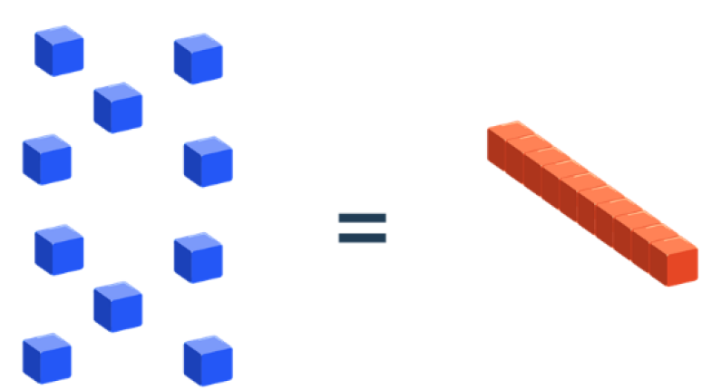
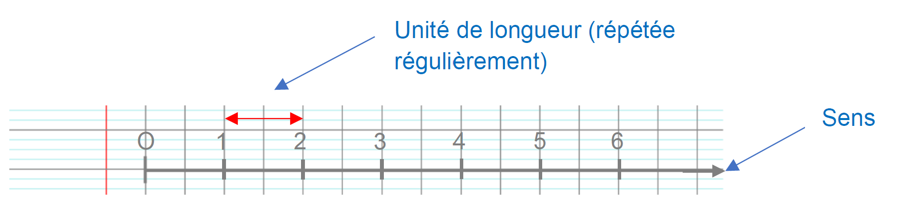

I. Numération décimale
Définition : Pour écrire tous les nombres, on utilise seulement 10 symboles que nous appelons chiffres :
1 ; 2 ; 3 ; 4 ; 5 ; 6 ; 7 ; 8 ; 9 ; 0.
C'est le système décimal.
Propriété : La position des chiffres dans un nombre détermine sa signification.
Chaque chiffre, à l'exception de celui des unités, représente un « paquet de 10 » :
- dix unités représentent une dizaine

- dix dizaines représentent une centaine

- dix centaines représentent une unité de mille
- etc.
Exemple :

Dans 4 705 232, le chiffre 2 des unités représente 2 × 1 alors que le chiffre 2 des centaines représente 2 × 100.
Ce nombre se lit « quatre-millions-sept-cent-cinq-mille-deux-cent-trente-deux ».
Il peut se décomposer de la façon suivante :
III. Repérage sur une demi-droite graduée
Définition : Une demi-droite graduée est une demi-droite sur laquelle on a choisi une unité de longueur reportée régulièrement depuis l'origine:

Exemple :
Je choisis comme unité de longueur 2 carreaux (2 carreaux représentent donc un écart de 1)

Propriété : Sur une demi-droite graduée, chaque point est repéré par un unique nombre appelé abscisse de ce point.
Exemple :

Ici, nous avons une demi-droite graduée d'origine O et d'unité 4 carreaux.
L'abscisse du point A est 3, on note A(3).
Exercice :
- Tracer une demi-droite graduée d'origine O et d'unité 3 cm.
- Placer A(1), B(2) et C(5).